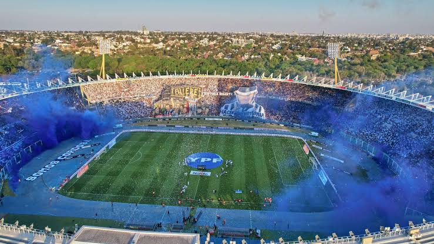
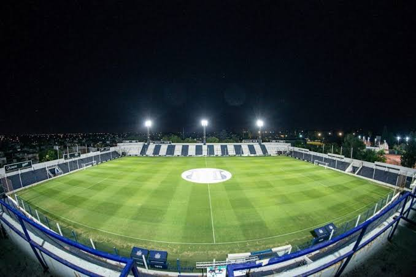

Estadio de Talleres
Talleres sufre una particularidad en cuanto a su estadio, ya que posee cancha propia pero hace de local en la cancha provincial de Cordoba.
Mario Alberto Kempes

El Club Atlético Talleres disputa sus partidos como local en el Estadio Mario Alberto Kempes de Córdoba, un escenario imponente con capacidad para 57,000 espectadores donde el equipo albiazul ha construido gran parte de su identidad moderna y convoca multitudes en cada jornada de la liga argentina.
"La Boutique"

El Estadio Francisco Cabasés, mas conocido como "La Boutique de Barrio Jardín", es el hogar histórico y el corazón institucional del Club Atlético Talleres. El entrañable apodo de "La Boutique" nació tras una serie de reformas en la década de 1975, cuando las particulares publicidades pintadas en sus muros y sus dimensiones compactas daban la cálida sensación de estar en una tienda elegante de indumentaria
¿Por que Talleres no juega de local en su cancha propia "La Boutique?

El plantel profesional masculino de Talleres no juega en La Boutique debido a una cuestión estricta de capacidad y masividad. Mientras que el histórico estadio de Barrio Jardín puede albergar un máximo de 18.000 espectadores, el club cuenta actualmente con una masa societaria activa que supera ampliamente ese número, llegando a colmar de forma habitual el Mario Alberto Kempes.